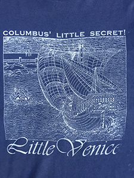

(1988-1991)
Washington, D.C., EUA
Folklore venezolano experimental con arpa y bandola
Integrantes:
Emilio Mendoza Bandola, cuatro,
guitarra, maracas, dirección
Jorge Díaz Herrera Arpa, cuatro
Ramón xxx
Bajo
eléctrico
Presentaciones en fiestas, en teatros al aire libre, en la Embajada
de Venezuela y en el Smithsonian Institute, Washington, DC.
Johanna Vogelsang (Takoma Park, Washington, DC), realizó el diseño
del grupo para camisetas de varios colores:
